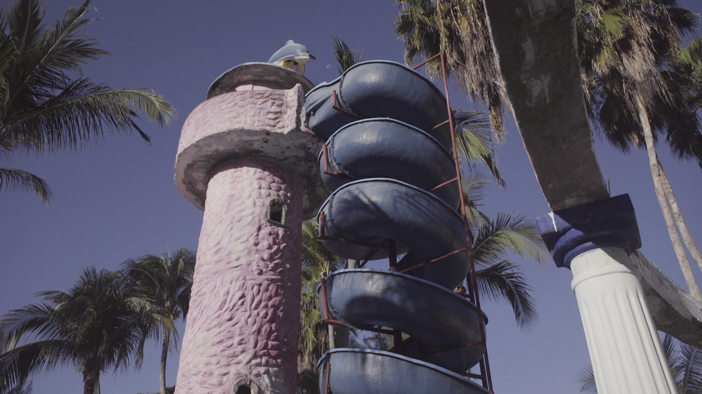

El Lado Quieto
The Still Side
(70 minutes, 2021)
In collaboration with Carolina Fusilier
Off the pacific coast of Mexico remains the island of Capaluco. Once a busy vacation resort catering to passing cruise ships, now empty of humans. A curious sea creature emerges from the water after traveling the strong current from the Philippines. The Siyokoy navigates through the architectural afterlife of the island, interacting with the spectral sounds. Somewhat of a science fiction embedded within a documentary, El Lado Quieto speculates on the future inhabitants of architectural remains.
Asia Culture Center Production Grant 2020
MoMA Doc Fortnight 2021
IDFA International Documentary Filmfestival Amsterdam 2021
El Lado Quieto is a sensorial journey between life and decay through colliding mythologies, surveying the afterlife of a post-human landscape. The spectres of tourism emerge within the process of making the film. The filmmakers make audible their casual conversations in which they search for meaning and imagine different lifeforms of the future.
—Galeria Campeche